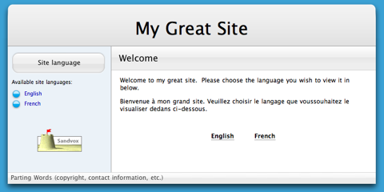

Creating a Multilingual Site
Introduction
This article is a guide to creating a multilingual site, whereby you have two or more copies of a site, each in a different language.
To do so, multiple sites are created, one for each language, along with an extra site that acts as a "gateway" to the individual language sites. The end result is a layout of sites like this:
Creating the Site
The Gateway Site
First, we are going to create the "gateway" site that leads visitors to the available languages.
Choose "New Site" from the File menu. Give the new site an appropriate name like "Gateway" and choose a location to save the document.
Pick a suitable design for the site and then lay out the content of the Home Page something like this:

You may wish to "beautify" things a little by perhaps including appropriate flags for each language.
Next we need to make the links to each language actually work!
For each language:
- Select the text of the link.
- Click the "Create Link" item in the toolbar.
- Enter the address of your site with the appropriate language. So, for English and French, you would enter something like this:
http://www.example.com/english http://www.example.com/french
Repeat for each language.
Finally, you need to publish the gateway site.
To publish the gateway site;
- Work through the instructions in "Setting Up Your Host." Do not enter a subfolder.
- Publish the site by clicking the "publish" item in the toolbar.
The Individual Language Sites
We now need to set up the individual language sites.
For each language:
- Create a new site document using the FIle menu and save it somewhere appropriate.
- Set the site language of the site correctly.
- Fill the site with your content in the language of the site.
- Prepare the site for publishing as described in "Setting Up Your Host." Set the subfolder to be the site language. e.g. for the English site, set the subfolder to "english."
- Publish the site by clicking the "publish" item in the toolbar.